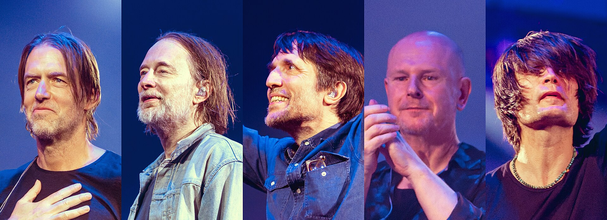
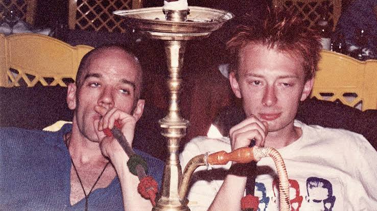

Radiohead are an English rock band formed in Abingdon, Oxfordshire, in 1985. The band members are Thom Yorke (vocals, guitar, keyboards); the brothers Jonny Greenwood (guitar, keyboards, other instruments) and Colin Greenwood (bass); Ed O'Brien (guitar, backing vocals); and Philip Selway (drums). They have worked with the producer Nigel Godrich and the cover artist Stanley Donwood since 1994. Radiohead's experimental approach is credited with advancing the sound of alternative rock.
Formation
The members of Radiohead met while attending Abingdon School, a private school for boys in Abingdon, Oxfordshire. The bassist Colin Greenwood and the guitarist and singer Thom Yorke were in the same year; the guitarist Ed O'Brien was one year above, and the drummer Philip Selway was in the year above O'Brien. When O'Brien and Yorke formed a band, they asked Colin to play bass. They asked Selway to join after playing their first show with a drum machine. Colin's brother, the multi-instrumentalist Jonny Greenwood, was three years below Colin and Yorke and the last to join. In 1985, the group formed On a Friday, the name referring to their usual rehearsal day in the school's music room. The band disliked the school's strict atmosphere—the headmaster once charged them for using a rehearsal room on a Sunday—and found solace in the music department. They credited their music teacher for introducing them to jazz, film scores, postwar avant-garde music, and 20th-century classical music. Advertisement placed in the Oxford music magazine Curfew announcing On a Friday's change of name While each member contributed songs in the band's early period, Yorke emerged as the main songwriter. According to Colin, the band members picked their instruments because they wanted to play together, rather than through any particular interest: "It was more of a collective angle, and if you could contribute by having someone else play your instrument, then that was really cool." They played few gigs and focused on rehearsing in village halls. Oxford had an active independent music scene in the late 1980s, but it centred on shoegazing bands such as Ride and Slowdive. On a Friday played their first gig in 1987 at Oxford's Jericho Tavern. On the strength of an early demo, On a Friday were offered a record deal by Island Records, but they decided they were not ready and wanted to go to university first. They continued to rehearse on weekends and holidays, but did not perform for four years. At the University of Exeter, Yorke played with the band Headless Chickens, performing songs including future Radiohead material. He also met Stanley Donwood, who later became Radiohead's cover artist. In 1991, the band regrouped in Oxford, sharing a house on the corner of Magdalen Road and Ridgefield Road. They recorded another demo, which attracted the attention of Chris Hufford, Slowdive's producer and the co-owner of Oxford's Courtyard Studios. Hufford and his business partner, Bryce Edge, attended a concert at the Jericho Tavern; impressed, they became On a Friday's managers. According to Hufford, at this point the band had "all of the elements of Radiohead", but with a rougher, punkier sound and faster tempos. At Courtyard Studios, On a Friday recorded the Manic Hedgehog demo tape, named after an Oxford record shop. In late 1991, Colin happened to meet the EMI A&R representative Keith Wozencroft at a record shop and handed him a copy of the demo. Wozencroft was impressed and attended a performance. That November, On a Friday performed at the Jericho Tavern to an audience that included several A&R representatives. It was only their eighth gig, but they had attracted interest from several record companies. A Melody Maker review praised their promise and "astonishing intensity", but said their name was "terrible". On 21 December, On a Friday signed a six-album recording contract with EMI. At EMI's request, they changed their name; "Radiohead" was taken from the song "Radio Head" on the Talking Heads album True Stories (1986). Yorke said the name "sums up all these things about receiving stuff ... It's about the way you take information in, the way you respond to the environment you're put in."
Their albums
- Pablo Honey (1993)
- The Bends (1995)
- OK Computer (1997)
- Kid A (2000)
- Amnesiac (2001)
- Hail to the Thief (2003)
- In Rainbows (2007)
- The King of Limbs (2011)
- A Moon Shaped Pool (2016)

Band that revolutionized alternative rock with their innovative sound and introspective lyrics. Thom Yorke's haunting vocals and the band's experimental approach have made them one of the most influential acts of their generation.
Learn more